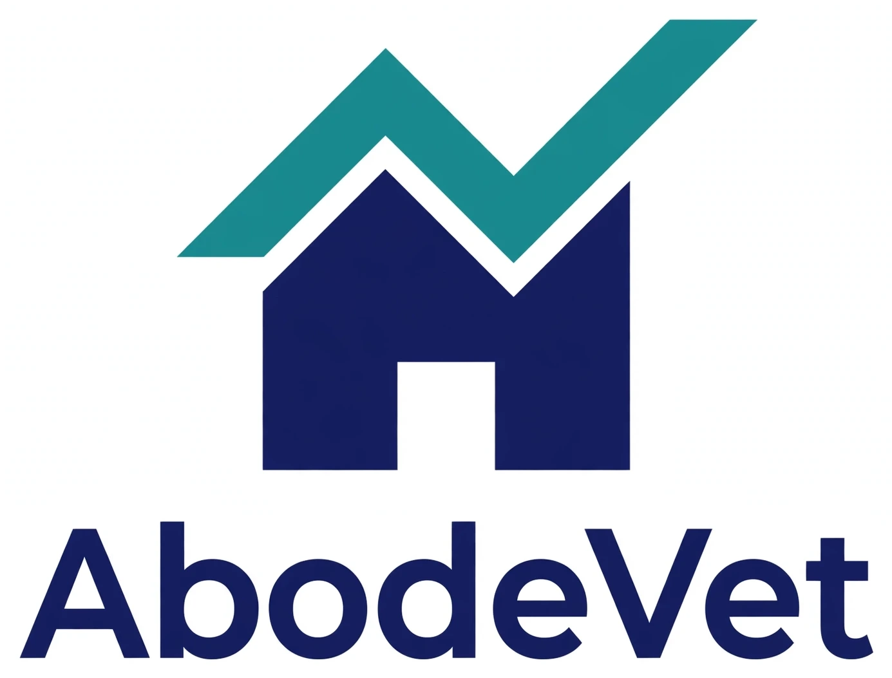

Private home due diligence · Southern California
Know the home before you own it.
A standard home inspection is one check. A home deserves sixty. AbodeVet coordinates every applicable specialist — inspectors, engineers, licensed trades, surveyors, reviewers — inside your contingency window, and delivers one consolidated findings packet before you close.
Begin an enquiryView the catalogue
Every physical check is performed by a vetted local company that does the work itself — and we publish their license numbers, so you can verify them the way we did.
What one engagement covers
One coordinator. One timeline. One fee. The depth a significant purchase deserves:
- ✓60 specialist checks across six disciplines — selected for your property, not sold as a bundle.
- ✓12–20 separate providers sequenced inside a typical contingency window, without you making a single scheduling call.
- ✓Licenses verified live against the state register before any company is named to you.
- ✓One findings packet — every report, reconciled against the seller's disclosures, before closing.
Engagements are quoted individually as a single facilitation fee. There is no per-item price list, because no two homes need the same sixty checks.
The service
Why one inspection is not diligence
California does not license general home inspectors — and even the best general inspection explicitly excludes most of what can go wrong with a home. The sewer lateral, the roof's underlayment, the soil under the foundation, the permits behind the remodel, the claims history behind the insurance quote: each belongs to a different specialist, a different license, a different visit.
Left alone, a thorough buyer would have to find, vet, schedule and reconcile a dozen or more separate companies inside a contingency window measured in days — while the seller's disclosures sit unchecked beside them.
AbodeVet exists to do that work properly. We investigate every company before it is engaged — a license and a website are not proof of anything — and we reject facilitators, lead marketplaces and dispatch franchises as a class. The companies in our network perform their own work, under their own licenses, and their license numbers are printed on this page.
It is a more expensive service than a single inspection because it is a different product: not a look at a house, but the whole truth about one.
01
Enquire & scope
Tell us the property and select the checks that concern you. We scope the engagement to the home — its age, systems, land and history — and quote a single facilitation fee.
02
We coordinate & verify
We book the specialists, sequence them inside your contingency window, collect their reports, and check every finding against the seller's disclosures and the public record.
03
One packet, before closing
You receive a single consolidated packet — every report, every discrepancy, every number that should change your decision or your price — while there is still time to act on it.
The catalogue
Sixty checks. Six disciplines. One coordinator.
Select the checks you want scoped into your enquiry. Each names the credential that performs it — in California, almost every specialist below is state-licensed, and that license is what we verify. Checks marked network vetting in progress are coordinated on enquiry while a provider for that discipline completes our standard; we name no company until it has.
Selected checks: 0 — included in your enquiry below. Fee quoted per engagement.
The network · Founding market
The Ventura market network
AbodeVet was founded in the Ventura market, and these are the companies that have cleared our standard there: license verified live against the California register on 26 November 2026, reputation established across independent sources, and the work performed by their own people. Verify any of them yourself — that is rather the point.
General home inspection
805 Home Inspections — Ventura
Inspections performed personally by the owner, Mike Hasty. California does not license home inspectors; the verifiable credential is certification — InterNACHI Certified Master Inspector®, ID NACHI12090409, confirmed in InterNACHI's own directory. 14+ years in business.
Roofing
Shelter Roofing & Solar Construction — Moorpark
Family-owned since 1978; its own estimators and crews. CSLB License #624196 — C-39 Roofing, C-10 Electrical · current & active to 30 Jun 2028.
August Roofing & Solar — Simi Valley
Operating since 1991; its own crews. CSLB License #786740 — C-39 Roofing, B General Building, C-10 Electrical · current & active to 31 Oct 2028. Vetted for roofing; we do not engage this firm for solar sales.
Plumbing & sewer
Gallegos Plumbing — Ventura
Family-owned, serving Ventura County since 1996; own trenchless sewer and hydro-jetting crews. CSLB License #1022795 — C-36 Plumbing, A General Engineering · current & active to 31 May 2028.
Hansen's Plumbing — Ventura
In business since the 1980s; its own crews perform sewer line replacement. CSLB License #623180 — C-36 Plumbing, B General Building, A General Engineering · current & active to 30 Sep 2028.
Electrical
Fornoff Electric — Thousand Oaks
A family business since 1968 — the family is the crew named in its reviews. CSLB License #650958 — C-10 Electrical · current & active to 29 Feb 2028.
United Electric — Camarillo
Family-owned since 1979; own certified technicians. CSLB License #378462 — C-10 Electrical, B General Building · current & active to 31 Dec 2027.
Heating & air conditioning
AirWorks Heating, Air & Plumbing — Somis / Camarillo
Family-owned since 2010 — in its own words, "not a franchise, not private-equity owned." CSLB License #950716 — C-20 HVAC, C-36 Plumbing · current & active to 28 Feb 2027.
Kaiser Air Conditioning — Oxnard
Family-owned since 1981, with its own sheet-metal fabrication facility and 40+ employees. CSLB License #407980 — C-20 HVAC, C-43 Sheet Metal · current & active to 31 Oct 2027.
Foundation
Dalinghaus Construction — serving Ventura from Westlake Village
Own crews dedicated exclusively to foundation, concrete and crawl-space work. CSLB License #983851 — A General Engineering, B General Building, C-8 Concrete, C-61/D-30 · current & active to 31 May 2027.
Pool & spa — inspection and service
Primary Pool Services — Thousand Oaks / Oxnard
Own uniformed technicians; engaged for pool inspection and service calls. CSLB License #1111429 — C-61/D-35 Pool & Spa Maintenance · current & active to 31 Oct 2027. Maintenance-scope license; not engaged for pool construction.
Five disciplines are not yet represented here
Termite & wood-destroying organisms · appraisal · mold & environmental testing · land surveying · chimney inspection.
Companies in these disciplines are being vetted now. Several are close; none has yet cleared every test on evidence we could verify, so none is named. Our standard rejects more companies than it accepts — a license and a website are not proof, franchises that dispatch are not performers, and an empty category is preferable to a padded one. When a company clears the standard, it will be named here, with its license number.
Our standard
How a company earns a place in the network
I
Investigated, not assumed
Every business is treated as unproven until investigated. A business license and an online presence do not establish that a company is real, reputable, or anything more than a shell.
II
Licensed, verified live
The trade license is checked against the official state register — current, active, correct classification, bond and workers' compensation on file — before a company is named, and the number is published here.
III
Performs the work itself
The company we name is the company that shows up. Facilitators, lead marketplaces, referral networks and companies that subcontract the work onward are rejected as a class — we coordinate; they perform.
Markets
Founded in Ventura. Expanding by market.
AbodeVet serves buyers in Southern California's luxury home markets. The Ventura market — our founding market — is presented above in full, because it is the market whose network has cleared our standard. We are expanding market by market, and a market opens only when its own network of companies has been investigated and verified to the same standard. Until then, we would rather tell you a market is not yet open than sell you diligence we have not done.
Begin an enquiry
Tell us the property and the checks you selected above. We respond with a scoped engagement and a single facilitation fee — no payment is collected online, and nothing is booked until you approve the scope.